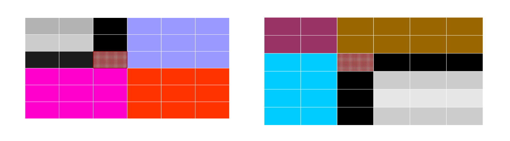

Binary search: eliminate one quandrant in each step
// Binary search: eliminate one quandrant in each step
// Complexity O(lg(m)+lg(n)) ? need to verify that
public static boolean BinSearch2D(int[][] array, int collo, int rowlo,
int colhi, int rowhi, int key) {
if(array != null) {
int colm = (collo + colhi)/2;
int rowm = (rowlo + rowhi)/2;
if(collo <= colhi && rowlo <= rowhi) {
if(key < array[colm][rowm]) {
boolean b1 = false, b2 = false, b3 = false;
b1 = BinSearch2D(array, collo, rowlo,
colm-1, rowm-1, key);
b2 = BinSearch2D(array, collo, rowm,
colm-1,rowhi, key);
b3 = BinSearch2D(array, colm, rowlo,
colhi, rowm-1, key);
return b1 || b2 || b3;
}
else if(key > array[colm][rowm]) {
boolean b1 = false, b2 = false, b3 = false;
b1 = BinSearch2D(array, colm+1, rowm+1,
colhi, rowhi, key);
b2 = BinSearch2D(array, collo, rowm+1,
colm, rowhi, key);
b3 = BinSearch2D(array, colm+1, rowlo,
colhi, rowm, key);
return b1 || b2 || b3;
}
else
return true;
}
}
return false;
}
